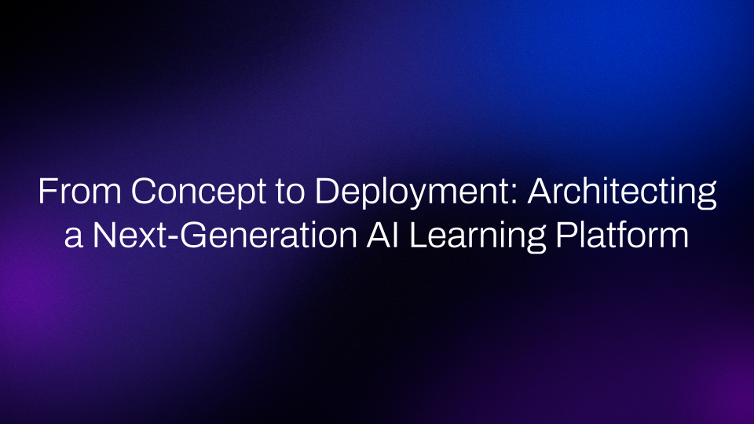

During the my time at The Knowledge House, I hade the great opportunity of leading the end-to-end deployment of an AI learning assistant served to thousands of users. This project known as Knowledge Base was an AI initiative with the goal of delivering personalized, up to date learning curriculum leveraging the power of Retrieval Augmented Generation.
Project Scope: Build an AI chatbot that acts as a knowledgeable personalized guide gathering its context from years of learning curriculum hosted on the organizations proprietary knowledge base, but also leverages the power of the ever-changing web to stay up to date and provide users with relevant current information.
As the Data Science lead on this project, I was not just in charge of the technical implementation. I was responsible for making key infrastructure decisions, managing the project lifecycle, defining key requirements with board members and organization stakeholders in order to align expectations organization wide, and be the organizations face when communicating with external teams from AWS.
Key Features
- Cloud Development: Hosted and deployed entirely on AWS, ensuring scalable, low latency and consistent infrastructure meeting the demands of thousands of daily user requests.
- Web Scraping AI Agent: An AI agent that built learning paths and scraped the web validating external web content that could be used by the user.
- CI/CD Pipeline: Built in CI/CD pipeline that served versioned Docker images to our EC2 instance insuring continuous integration and continuous deployment.
- Retrieval Augmented Generation: Leveraged the power of RAG to build context aware chatbots and utilize years of learning curriculum.
- Verification Algorithm: Reddit style verification algorithm that leveraged user interaction data like: upvotes, downvotes and interaction time on learning resources in order to "verify" and feed to RAG Vector Database.
Infrastructure Diagram
Implementing the Technical Layers: From Code to Cloud
In order to build such an extensive platform, there needed to be a lot of coordination and I did this by structuring the project into multiple distinct technical components. Each component hit a key technical domain, the components then interacted and worked with each other to build a single working platform.
1. The Data Foundation: PostgreSQL, S3, AWS DynamoDB
At the heart of this learning platform was data. This project involved working with various different types of data some structured, semi-structured and unstructured data. All data equally important to the success of the platform. At the core was a comprehensive PostgreSQL schema that served as a source of truth. This database did not just store static content it tracked:
- User data and interaction history (for personalization).
- Resource metadata (source, date, category, difficulty level, instruction program).
- A verification layer, tracking which resources were "verified" and deemed high quality enough to be fed to the RAG model.
2. The Intelligence Engine: AWS Bedrock & RAG
At the heart of the chatbot was AWS Bedrock, which allowed us to access a multitude of different Large Language Models. This allowed us to test the output of different models in order to ensure we deployed the model that was best suited for our use case. In order to ensure that our responses were built on accurate and relevant context, I implemented a robust Retrieval Augmented Generation pipeline.
- Process: User queries are converted to embeddings in order for the RAG pipeline to retrieve the most relevant context from our verified learning resources. The model then adds this context to the LLM in order to generate a response that is relevant.
- Quality Assurance: A critical part of this setup was the integration of LangSmith. This framework allowed us to rigorously test and fine-tune the model output against our already existing learning curriculum standards. This guaranteed that our responses stayed consistent with the teaching curriculum that was already being taught by instructors at the organization.
3. Content Acquisition Layer: The Web Scraping AI Agent
A key requirement for the project was to ensure that our learning content remained dynamic and did not just rely on legacy learning curriculum. Therefore our learning platform needed access to the web in order to pull in up to date information that could be used to build relevant context for the RAG model. The AI Agent was designed to scrape the web for learning resources based on user data.
- Personalization: The agent used user data (such as performance metrics, interaction history, perceived skill, etc.) to build highly personalized learning paths based on the users initial query.
- Web Scrapping: Based on these learning paths, the agent autonomously scraped key industry websites ike Reddit, Stack Overflow, and various tool documentation sites.
- Verification Step: Additionally the AI Agent then fed newly discovered learning resources to our client facing Reddit style internal website where users could interact, access and vote on these resources. Resources that were considered "high signal", by passing a verification process (using our own built algorithm) were then processed, embedded and stored into an S3 bucket tied to RAG system.
4. API Gateway: FastAPI, Docker and EC2 Deployment
In order to tie in the Node.js client facing website with our AWS hosted chatbot we needed an API connection layer. This came in the form of a Python based API application built using FastAPI.
- Abstraction: This API layer acted as the source of communication, abstracting the complexity and moving parts of the RAG pipeline away from the client facing website.
- Deployment Strategy: Local testing involved containerizing the API application using a Docker image deployed on AWS LightSail. Once we were ready to push to production we switched the container to a dedicated EC2 instance. Equipped with AWS EC2 Auto Scaling we were ready to scale our deployment handling hundreds of requests on a daily basis.
5. Operations & Deployment: The CI/CD Pipeline
Another deployment requirement was having a robust CI/CD pipeline in order to ensure that our deployment process was automated and versioned. To achieve this I setup a pipeline utilizing GitHub Actions so that when we made changes to the main branch of our private repository, we would see a new deployment (considering all validation tests were passed).
- Automation: I configured a YAML workflow that automatically triggered upon commits to the main branch. The steps in this workflow invovled: creating a new environment (with all the neccessary packages to run our Python based API), containerizing our application, setting up AWS credentials, validating tests using LangSmith, pushing a new version of our deployment to AWS.
- Reliability: The pipeline's function was simple yet vital: build a new Docker image of the latest API code, push it to our container registry, and safely deploy it to the production EC2 instance. This ensured that every code change was immediately tested, containerized and deployed thus minimizing downtime and human error.
Reflection: Beyond the Code
Looking back, what truly defined this project was the fact that this was the first time in my career where I was entirely in charge of a project end to end. This experience came at an early time in my career where I was still struggling with imposter syndrome and did not know if I was ready for my next big opportunity.
As the lead, my responsibilities extended far beyond just writing Python code. I was responsbile for:
- Translating Ambiguity: Working with non-technical board members and internal stakeholders in order to understand their high-level goals and translating that into concrete technical implementations. This was something that I found difficult at first. I found that presenting my findings and being open to direct feedback led me to find the solutions that served the organizations goals.
- Deciding Architecture: Being able to lead technical decision making and justifying my decisions led me to understand that trade-offs in cost, complexity, and scalability truly matter. This shifted my understanding to not just think of the what but also the why.
- Governance & Alignment: Acting as the communication conduit between our internal team and the external AWS cloud partnership teams was a huge responsibility. I had to ensure that all infrastructure decisions adhered to the best industry standards for security and cost efficiency. I had to make sure that both my organization and AWS were aligned in order to meet grant requirements.
This project was invaluable in giving me the experience of leading cross functional teams, meeting high-stakes initiatives and building at scale. I am incredibly proud of the work that was done and looking forward to continue to apply the knowledge gained through this project throughout my career.